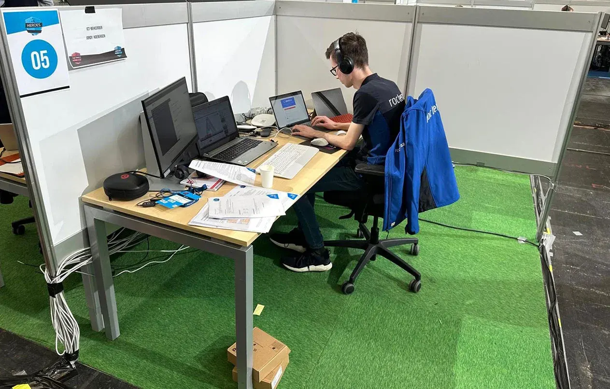

Jordy Hoebergen - Skills Heroes 2023
In het kort
In 2023 heb ik meegedaan aan Skills The Finals in de categorie 'ICT-beheerder'. Tijdens deze wedstrijd streed ik tegen 7 andere finalisten. We kregen twee dagen de tijd om verschillende opdrachten te maken.
Ieder jaar organiseert WorldSkills Netherlands dit evenement. Tijdens dit evenement strijden MBO studenten voor de titel beste vakman/vakvrouw van Nederland in hun vakgebied.

Kwalificatie
In december 2022 heb ik meegedaan aan de kwalificatiewedstrijd voor ICT-beheerder van Skills Heroes. Aan deze wedstrijd deden 24 studenten mee van verschillende MBO scholen in Nederland. Ik heb mij kunnen kwalificeren voor de finale. Er zijn in totaal 8 studenten gekwalificeerd voor Skills The Finals.
Tijdens de kwalificatie kregen we de opdracht om verschillende opdrachten te maken in de Microsoft 365 omgeving. Zo moesten er bijvoorbeeld nieuwe gebruikers geïmporteerd worden in Entra ID, nieuwe mailboxen aangemaakt worden en een sharepoint ingericht worden voor de verschillende afdelingen. Daarnaast werden er ook twee desktops beheerd met Intune.

Finale
Op 23 en 24 maart was het dan eindelijk zo ver, de twee finale dagen. Tijdens de finale kregen we een grote opdracht die bestond uit meerdere deelopdrachten.
Zo kregen we de opdracht om een pilot te starten voor een zorgcentrum. De eerste dag kregen we de opdracht om een nieuw Wifi-netwerk in te richten, inclusief RADIUS authenticatie, meerdere VLANS en een gasten netwerk. Van te voren hebben we een WiFi-netwerk moeten ontwerpen met de online tool Hamina.
De tweede dag kregen we de opdracht om de opensource applicatie OpenEMR te installeren en configureren op een Ubuntu server, zodat de medewerkers van het zorgcentrum de cliëntdossiers digitaal kunnen raadplegen. Hierna moesten we verschillende handleidingen maken zodat de bewoners en zorgmedewerkers zelfstandig kunnen inloggen op het Wifi-netwerk en in kunnen loggen in het OpenEMR systeem.

Prijsuitreiking
Op de laatste dag vond ook de prijsuitreiking plaats. Dit was een groot evenement in de RAI in Amsterdam. Hier werden de winnaars van iedere vak wedstrijd bekend gemaakt. Het duurde even voordat de ICT-beheerders aan de beurt waren, maar toen ik meteen hierna mijn eigen naam hoorde was ik super blij!
Met trots kan ik zeggen dat ik de winnaar ben in het vakgebied ICT-beheerder!
De volledige uitslag van de finale is te vinden op de website van WorldSkills Netherlands

Aftermovie
Er is een mooie aftermovie gemaakt door ROC Ter AA van de finale. In totaal hebben er 12 studenten van het ROC Ter AA meegedaan aan Skills Heroes!